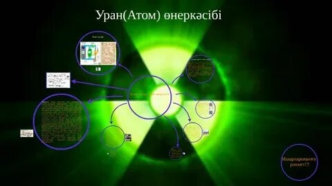
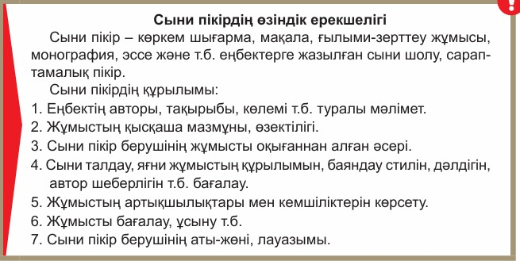
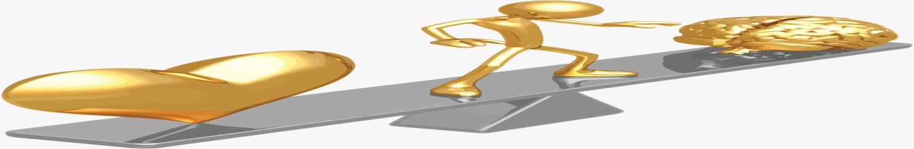
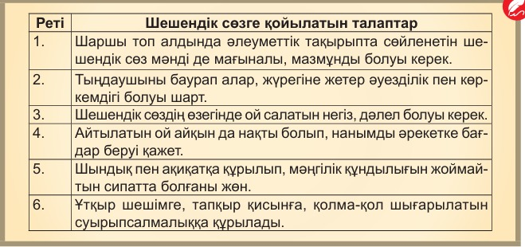
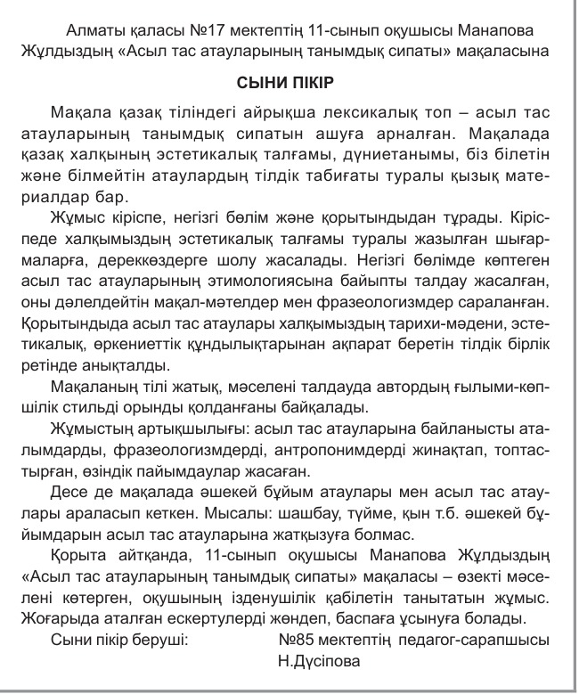

15-ТАПСЫРМА (СӨЖ № 15.1)
Атом өнеркәсібі. Сыни пікірдің өзіндік ерекшелігі
I. Теориялық кешен (дәріс тезистері)
Мақсаты: Атом өнеркәсібіне қатысты мәтінді түсініп, негізгі ойды, автордың көзқарасын анықтайды; тақырып бойынша сыни пікірдің өзіндік ерекшеліктерін талдайды, мәселені түрлі қырынан қарастырып, дәлелді пікір білдіреді; атом өнеркәсібінің қоғамға әсеріне қатысты өз көзқарасын білдіріп, дәлелді және құрылымды мәтін (ауызша/жазбаша) құрастырады.
Міндеттері: Атом өнеркәсібі тақырыбындағы мәтінді мұқият оқиды, негізгі ақпаратты анықтайды; сыни пікірдің ерекшеліктерін танып, мәселе бойынша ой қорытады; атом өнеркәсібіне қатысты өз көзқарасын дәлелмен білдіреді.
Бағалау критерийлері: Мәтінде көтерілген мәселеге талқылау сұрақтарын құрастырады; Таза ғылыми стильдегі мәтіннің құрылымын, жанрлық ерекшеліктерін талдайды; Оқылым материалы бойынша ақпаратты іріктеп, түртіп жазады.
Дәрістің қысқаша тезистері
Атом өнеркәсібі – уран кенін өндірумен шұғылданатын, одан атом энергиясын өндіретін және сол энергияны пайдаланып жұмыс істейтін өнеркәсіп саласы. Ядролық энергия өнеркәсіпте, ғылымда, медицинада т.б. салаларда пайдаланылады. Ядролық энергияны пайдаланып, атом электр станциялары жұмыс жасайды, кеме, пойыздар жүріп, ұшақтар мен зымырандар ұшады. Атом өнеркәсібі 50-жылдардың орта шенінде, атап айтқанда, 1954 жылы КСРО-да тұңғыш АЭС іске қосылғаннан кейін жеке өнеркәсіп саласы болып қалыптасты. Бұдан кейін Ұлыбританияда, АҚШ-та АЭС-тар іске қосылды. 1997 жылы барлығы 437 АЭС жұмыс істеді. Олар дүниежүзіндегі электр қуатының 17%-ін өндірді.

1-сурет: Атом өнеркәсібінің дамуы мен АЭС жұмысы
Қазақстан уран қорының молдығы жөнінен әлемде 1-орынды иемденеді. 50-жылдардан бастап Қазақстандағы 20 кен орнында уран өндіру жұмыстары жүргізілді. Қазақстанның барлық аймақтарында уран өндірумен айналысатын өндіріс орындары бар. Олардың ең ірілері: Тау-кен химия комбинаты (Орталық Қазақстан), Ертіс химия-металлургия зауыты (Шығыс Қазақстан), Каспий жағалауы тау-кен металлургия комбинаты (Батыс Қазақстан), Оңтүстік Қазақстан кен басқармасы т.б. Қазақстандағы тұңғыш АЭС – Ақтау қаласында салынған (1973 ж.) шапшаң нейтронмен жұмыс істейтін БН-350 реакторы бар энергия комбинаты. Бұдан басқа Қазақстанның Ұлттық ядролық орталығында төрт зерттеу реакторы жұмыс істейді. Оның үшеуі Курчатов қаласының маңында, біреуі Алматы қаласының жанында орналасқан.

2-сурет: Қазақстанның уран өнеркәсібі мен ядролық орталықтары
Бақылау сұрақтары:
- Атом өнеркәсібі дегеніміз не және ол қандай салаларда қолданылады?
- Атом өнеркәсібі жеке сала ретінде қашан және қай елде қалыптасты?
- 1997 жылы әлем бойынша қанша атом электр станциясы (АЭС) жұмыс істеді және олар қанша пайыз электр қуатын өндірді?
- Қазақстан уран қоры бойынша әлемде қандай орында тұр және қанша кен орнында уран өндіру жұмыстары жүргізілді?
- Қазақстандағы тұңғыш АЭС қай қалада, қай жылы салынды және ол қандай реактор түрімен жұмыс істейді?
Тапсырманы орындау бойынша нұсқаулық (орындау тәртібі):
- Мәтінді түсініп оқиды, мәтіннен түсінгенін айтады;
- Ережелерді оқып, есте сақтап алады;
- Сұрақтарға жауап береді.
Тапсырмадан күтілетін нәтиже: Берілген ақпаратты оқу, есте сақтап алу, сұрақтарға жауап беру.
Тапсыру формасы: Ауызша түрде.
Модуль / пән бойынша ұсынылатын әдебиеттер тізіміне сілтемелер: Okulyk.kz - Қазақ тілі оқулығы
II. Практикалық кешен (СӨЖ № 15.2)
1-тапсырма. Конспектілеу
Тапсырма: Оқылым материалы бойынша негізгі ақпаратты іріктеп, түртіп жазыңдар (конспектілеңдер).
Оқылым материалы: Осыдан тура 30 жыл бұрын, яғни 1986 жылы 26 сәуірде Украинадағы Чернобыль атом электр станциясы жарылған болатын. Апаттың салдарынан Украинаның елеулі аумағы мен Ресейдің Брянск және Калуга облыстарының аумағына радиоактивтік ауа жайылып, халық өміріне зор қауіп төнді. АЭС-тен радиусы 30 шақырым жерде тұратын халық басқа жерлерге көшірілді. Апатқа ұшыраған аумақ залалсыздандырылды. Кенеттен келген апаттың зардабын жоюға Қазақстан азаматтары да тартылды. Радиоактивті түтін ол аймақтан асып, 10-нан аса мемлекеттің 145 мың км² жерін ластады, кем дегенде 5 млн халық зардап шекті. (e-history.kz)

1-сурет: Чернобыль АЭС апатының салдары
| Негізгі ақпарат (Кілт сөздер) | Конспектілік жазба |
|---|---|
| |
|
2-тапсырма. Диалог құру және сыни бағалау
Тапсырма: Атом өнеркәсібінің адамзатқа тигізетін зардабы туралы өз ара диалог құрыңдар. Талқылау сұрақтарын құрастырып, сыни тұрғыда баға беріңдер.
3-тапсырма. Пайдасы мен зиянын салыстыру кестесі
Тапсырма: Атом өнеркәсібінің пайдасы мен зияны туралы нақты дәлелдер келтіріп, кестені толтырыңдар.
| Зияны | Пайдасы |
|---|---|
|
• Радиоактивті апаттар қаупі (Чернобыль, Фукусима); • Радиоактивті қалдықтарды сақтау және жою күрделілігі; • Экологияға және халық денсаулығына кері әсері. |
• Электр энергиясының тұрақты әрі мол көзі; • Парниктік газдарды шығармайтын экологиялық таза энергия түрі (көмірқышқыл газы жоқ); • Өнеркәсіп, ғылым және медицина салаларында кеңінен қолданылуы. |

2-сурет: Атом өнеркәсібінің пайдасы мен экологиялық әсері
4-тапсырма. Сыни пікір жазу
Тапсырма: Берілген үлгіні негізге алып, «Дүниежүзілік экологиялық дағдарыс» тақырыбындағы жазба жұмысына сыни пікір жазыңдар.
Үлгі сыни пікір:
Бүгінгі таңда дүниежүзілік экологиялық дағдарыс адамзат алдында тұрған ең басты қатерлердің бірі болып отыр. Атом өнеркәсібінің қарқынды дамуы энергетикалық тапшылықты шешкенімен, қоршаған ортаға төндіретін қаупін жоққа шығаруға болмайды. Сондықтан жаңа технологияларды енгізу барысында қауіпсіздік шараларын қатаң қадағалап, баламалы жасыл энергия көздеріне басымдық беру – заман талабы.

3-сурет: Дүниежүзілік экологиялық дағдарыс
Модуль / пән бойынша ұсынылатын әдебиеттер тізіміне сілтемелер: Okulyk.kz - Қазақ тілі оқулығы
III. Бағалау парағы
| № | Тапсырма | Дескрипторлар | Ұпай саны | Студенттің ұпай саны |
|---|---|---|---|---|
| 1 | Бақылау сұрақтары: |
• Мәтінді түсініп оқиды, түсінгенін айтады; • Сұрақтарға жауап береді. |
10 балл 10 балл |
|
| 2 | Конспектілеу (Мәтін бойынша) |
• Негізгі ақпаратты іріктейді; • Түртіп жазып, конспект жасайды. |
10 балл 10 балл |
|
| 3 | Диалог құру және сыни бағалау |
• Талқылау сұрақтарын құрастырады; • Сыни тұрғыда пікір білдіреді. |
20 балл | |
| 4 | Пайдасы мен зиянын кесте арқылы талдау | • Нақты дәлелдер келтіріп, кестені толтырады. | 20 балл | |
| 5 | «Дүниежүзілік экологиялық дағдарыс» тақырыбында сыни пікір жазу | • Тақырып бойынша құрылымды сыни пікір жазады. | 30 балл | |
| Барлығы: | 100 балл | / 100 | ||